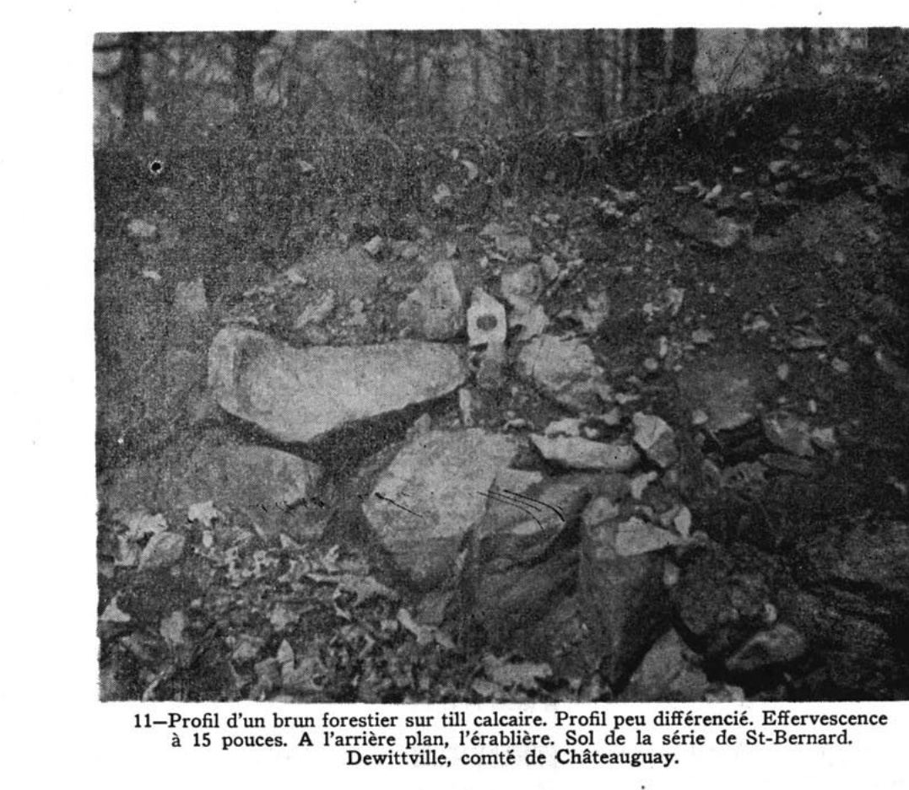
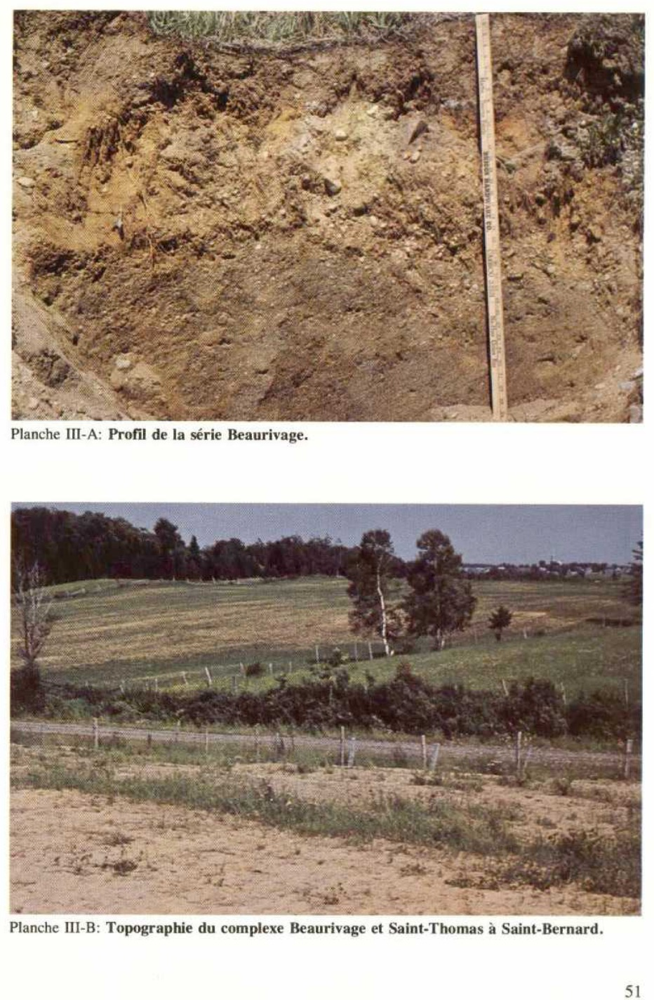
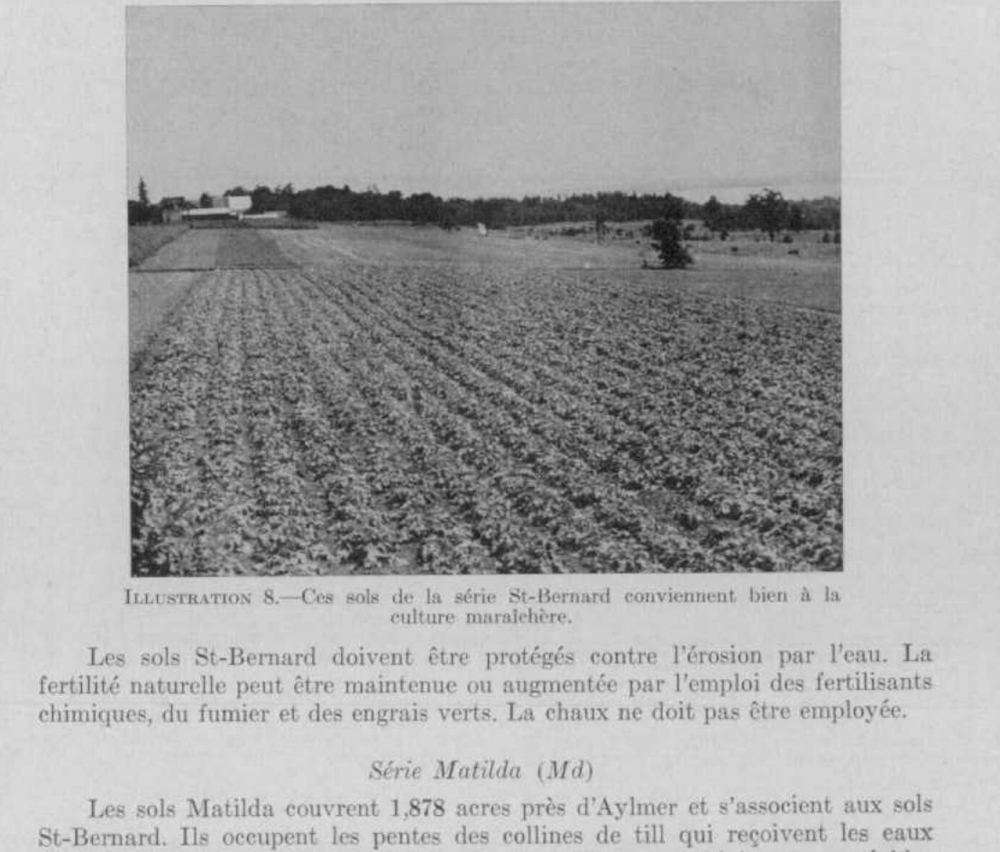
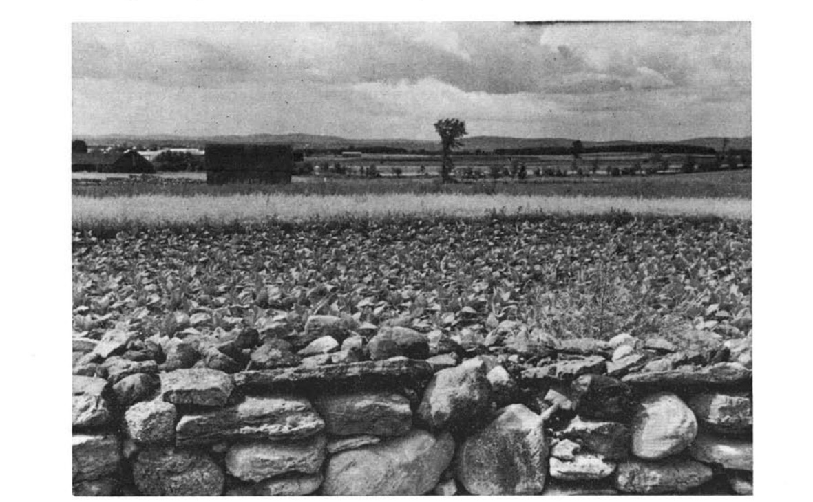
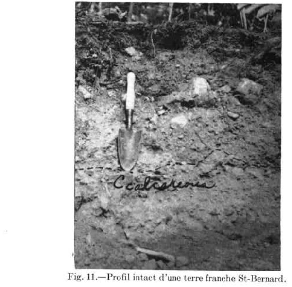

Identification & Caractéristiques Générales
La série Saint-Bernard regroupe des sols développés sur un till morainique basal ou ablatif, principalement dérivé de roches carbonatées, notamment de la dolomie de la formation de Beekmantown. Ce matériau originel renferme des carbonates libres, bien que la réaction au contact d'acides dilués présente une effervescence lente mais soutenue. Géomorphologiquement, ces sols occupent des paysages de basses terres caractérisés par des reliefs variant de légèrement ondulés à vallonnés, s'étageant généralement à des altitudes comprises entre 100 et 400 pieds. À l'état naturel, les sédiments morainiques se caractérisent par la présence de pierres et de blocs erratiques en surface, lesquels ont historiquement nécessité des opérations d'épierrage pour permettre la mise en valeur agricole des terres.
Le profil pédologique présente une texture dominante de loam ou de loam sableux fin, conférant au solum une perméabilité élevée et une bonne aération. Le drainage naturel est jugé bon, permettant une infiltration rapide des eaux pluviales et une capacité de rétention hydrique modérée. En raison de cette perméabilité et de la position topographique, les risques d'érosion hydrique demeurent faibles sur les faibles pentes, mais augmentent sur les déclivités prononcées ou lorsque le travail cultural est exécuté dans le sens de la pente, entraînant un tri des particules fines et une accumulation de graviers en amont. La réaction du sol en surface est neutre ou légèrement acide, tandis que les sous-sols démontrent une forte disponibilité en calcium et en magnésium héritée de la lithologie calcaire et dolomitique.
Sur le plan agronomique, les sols de la série Saint-Bernard présentent un niveau de fertilité naturelle élevé et se réchauffent rapidement au printemps, ce qui permet une préparation hâtive des lits de semence comparativement aux autres sols minéraux de la région. Ils conviennent à une vaste gamme de productions végétales adaptées au climat québécois, incluant les grandes cultures, les cultures fourragères et particulièrement la luzerne, cette dernière bénéficiant de la richesse calcique du profil. Les limitations principales sont associées à la pierrosité initiale et à la présence de pentes nécessitant des pratiques adéquates de conservation des sols, telles que le labour contourné. Le chaulage n'est généralement pas requis pour la majorité des cultures en raison de la nature chimique du substrat.
Classification Taxonomique & Environnement Pédologique
| Ordre Pédologique | Brunisolique |
|---|---|
| Grand Groupe (SCSS) | Brunisol mélanique |
| Sous-Groupe Taxonomique | Brunisol mélanique orthique |
| Famille Pédologique | Loameuse-grossière, mixte sableux, alcalin (calcaire) |
| Mode de Dépôt Parental | Morainique |
| Classe de Drainage Naturel | Bien drainé |
| Régime Thermique & Humidité | Doux / Semi-aride |
Description Morphologique du Profil Type
Séquences génétiques des horizons pédologiques caractérisant le profil type représentatif de la série Saint-Bernard :
Profil forestier (sous boisé) — Comté de Gatineau
✓ Source : Comté de Gatineau — Page 30Couleur Munsell : 10YR 2/2
Structure & Consistance : Granuleuse bien développée
Description morphologique : Loam brun très foncé (10YR 2/2); quelques fragments graveleux et quelques pierres; structure granuleuse bien développée; friable et perméable; pH 6.7 à 7.4.
Couleur Munsell : 5YR 3/4
Structure & Consistance : Polyédrique à granulaire
Description morphologique : Loam brun rougeâtre foncé (5YR 3/4-3/2); quelques pierres et fragments graveleux; structures granuleuse et cuboïde subanguleuse bien développée; friable et perméable; pH 7.2 à 7.4.
Couleur Munsell : 10YR 5/3
Structure & Consistance : Cuboïde sub-anguleuse
Description morphologique : Loam brun à brun foncé (10YR 5/3-4/3); nombreux fragments graveleux et quelques pierres anguleuses; structure cuboïde sub-anguleuse; moins friable que ci-dessus; modérément perméable; carbonates libres parfois présents; pH 7.5 à 7.7.
Couleur Munsell : 10YR 5/2
Structure & Consistance : Polyédrique à granulaire
Description morphologique : Till de loam graveleux à loam sableux, brun grisâtre à brun jaunâtre foncé (10YR 5/2-4/4); manque d'uniformité de la couleur dû à des marbrures et à des pierres partiellement décomposées; effervescence à l'acide qui débute lentement mais s'accentue et dure longtemps.
Profil naturel (vierge) — Comté de Joliette
✓ Source : Comté de Joliette — Page 71Couleur Munsell : 10YR 2/2
Structure & Consistance : Granulaire
Description morphologique : Sable loamo-graveleux, structure granulaire, brun très foncé (10YR 2/2), consistance friable. pH: 6.2.
Couleur Munsell : 10YR 4/3
Structure & Consistance : Nuciforme
Description morphologique : Sable loamo-graveleux, structure nuciforme, brun (10YR 4/3), consistance friable. pH: 7.0.
Couleur Munsell : 10YR 4/2
Structure & Consistance : Quelque peu laminée
Description morphologique : Till de sable loamo-graveleux, structure quelque peu laminée, brun gris foncé (10YR 4/2) consistance légèrement compacte, réagit au contact de HCL dilué. pH: 7.4.
Profil forestier (sous boisé) — Comté de L'assomption
✓ Source : Comté de L'assomption — Page 33Couleur Munsell : 10YR 2/2
Structure & Consistance : Granuleuse
Description morphologique : Humus minéralisé et loam brun très foncé à brun grisâtre très foncé (10YR 2/2-3/2); structure granuleuse; pH 6.0 à 6.8.
Couleur Munsell : 7.5YR 4/4, 10YR 4/3
Structure & Consistance : Granuleuse
Description morphologique : Loam brun foncé (7.5YR 4/4-10YR 4/3) contenant plusieurs fragments graveleux et quelques pierres; structure granuleuse; très friable, perméable et aéré; pH 6.5 à 7.0.
Couleur Munsell : 10YR 5/4
Structure & Consistance : Polyédrique à granulaire
Description morphologique : Mêmes caractéristiques que pour l'horizon Bm 1, excepté pour la couleur qui est brun jaunâtre (10YR 5/4-5/6) et pour la réaction qui va de pH 6.8 à 7.2.
Couleur Munsell : 10YR 5/2
Structure & Consistance : Polyédrique à granulaire
Description morphologique : Till de loam ou de loam sableux brun grisâtre à brun pâle (10YR 5/2-6/3); ferme et perméable; l'effervescence produite avec l'acide dilué est lente mais dure longtemps; pH 7.6 à 7.8.
Profil cultivé (agricole) — Sols de l'île de Montréal
✓ Source : Sols de l'île de Montréal — Page 33Couleur Munsell : Non précisée
Structure & Consistance : Granulaire
Description morphologique : Terre franche brun très foncé (10YR2/2) 1 , contenant du gravier et des cailloux; structure granulaire; friable; pH 6·7 à 7·4.
Couleur Munsell : Non précisée
Structure & Consistance : Nuciforme fine très marquée et structure granulaire
Description morphologique : Terre franche brun rougeâtre foncé (5YR3/4-3/2) contenant du gravier; quelques pierres; très friable; structure nuciforme fine très marquée et structure granulaire; couleur uniforme; pH 7·5.
Couleur Munsell : Non précisée
Structure & Consistance : Nuciforme
Description morphologique : Terre franche graveleuse brun foncé à brun (10YR3/4-5/3); contenant quelques pierres anguleuses; consistance plus ferme que celle de l'horizon ci-dessus, mais encore friable; structure nuciforme; carbonates libres parfois présents mais de façon régulière; pH 7·5-7·7.
Couleur Munsell : Non précisée
Structure & Consistance : Polyédrique à granulaire
Description morphologique : Till de terre franche graveleuse variant de brun à brun jaunâtre foncé (10YR4/3-4/4); mouchetures discrètes produites surtout par la désagrégation de pierres et conférant au tout une couleur moins uniforme que dans le cas de l'horizon ci-dessus; carbonates libres (l'effervescence prend du temps à se produire, mais elle s'effectue graduellement et dure longtemps); pH 7·8.
Profil représentatif — Sols de l'île de Montréal
✓ Source : Sols de l'île de Montréal — Page 34Couleur Munsell : Non précisée
Structure & Consistance : Granulaire fine
Description morphologique : Terre franche ou terre franche argileuse brun foncé (75YR3/2); quelque peu graveleuse; structure granulaire fine; friable; pH 7,5.
Couleur Munsell : Non précisée
Structure & Consistance : Granulaire fine
Description morphologique : Terre franche ou terre franche argileuse brune (10YR4/3); structure granulaire fine; friable; contenant des pierres anguleuses et des fragments de pierres; effervescence faible et très lente.
Couleur Munsell : Non précisée
Structure & Consistance : Granulaire
Description morphologique : Terre franche graveleuse brune (10YR4/3) de till désagrégé; contenant plusieurs pierres calcaires et des fragments de pierre à chaux; structure granulaire; friable; effervescence lente et durable; pH 7,9.
Couleur Munsell : Non précisée
Structure & Consistance : Polyédrique à granulaire
Description morphologique : Till de terre franche graveleuse brune (10YR5/3); renfermant une forte quantité de grosses pierres anguleuses; effervescence lente et durable; très dur à creuser.
Profil cultivé (agricole) — Comté de Portneuf
✓ Source : Comté de Portneuf — Page 115Couleur Munsell : 10YR 4/2
Structure & Consistance : Polyédrique à granulaire
Description morphologique : Loam sableux brun-gris foncé (10YR 4/2 h, 4/2 s) ; particulaire ; très friable ; racines abondantes, fines à microscopiques, non-orientées, exo-agrégats ; forte effervescence, discontinue ; limite abrupte, régulière ; pH : 7.7.
Couleur Munsell : 10YR 3/2, 10YR 4/1
Structure & Consistance : Polyédrique à granulaire
Description morphologique : Sable loameux brun-gris très foncé (10YR 3/2 h), gris foncé (10YR 4/1 s) ; particulaire ; très friable ; racines abondantes, fines à microscopiques, non-orientées, exo-agrégats ; forte effervescence, discontinue ; limite abrupte, interrompue ; pH : 7.8.
Couleur Munsell : 10YR 4/3, 10YR 6/2
Structure & Consistance : Polyédrique à granulaire
Description morphologique : Sable loameux brun foncé (10YR 4/3 h), gris-brun clair (10YR 6/2 s) ; particulaire ; très friable ; racines peu abondantes, fines à microscopiques, verticales, exo-agrégats ; effervescence discontinue ; limite distincte, ondulée ; pH : 7.9.
Couleur Munsell : 2.5Y 4/4, 2.5Y 6/2
Structure & Consistance : Polyédrique à granulaire
Description morphologique : Loam sableux olive (2.5Y 4/4 h), gris-brun clair (2.5Y 6/2 s) ; particulaire ; très friable ; forte effervescence, continue ; pH : 8.2.
Profil naturel (vierge) — Comté de Soulanges
✓ Source : Comté de Soulanges — Page 27Couleur Munsell : Non précisée
Structure & Consistance : Friable
Description morphologique : Terre franche sableuse brun foncé, structure friable, granulée, pH 5.2.
Couleur Munsell : Non précisée
Structure & Consistance : Granulée fine
Description morphologique : Terre franche sableuse brune, structure granulée fine, friable pH 5.0.
Couleur Munsell : Non précisée
Structure & Consistance : Granulée fine
Description morphologique : Terre franche sableuse brun jaunâtre foncé avec quelques fragments de gravier, structure granulée fine, friable pH 6.7.
Couleur Munsell : Non précisée
Structure & Consistance : Polyédrique à granulaire
Description morphologique : Till de terre franche sableuse variant de gris brun à gris jaunâtre, qui fait généralement effervescence au contact d'acide. Le till a probablement une profondeur de 25 pieds ou plus sur le roc. pH à 36 pouces, 7.8.
Profil représentatif — Comté de Huntingdon
✓ Source : Comté de Huntingdon — Page 176Couleur Munsell : Non précisée
Structure & Consistance : Polyédrique à granulaire
Description morphologique : Litière de débris végétaux, de feuilles mortes et d'humus noir brun (Mull).
Couleur Munsell : 10YR 2/2
Structure & Consistance : Moyennement grumeleuse
Description morphologique : Limon argilo-gravelo caillouteux, brun très foncé (10YR 2/2 humide), poreux; structure moyennement grumeleuse, très friable. $\text{pH}$: $7.2 - 7.8$. Présence de fragments de pierres calcaires.
Couleur Munsell : 7.5YR 4/4, 5YR 5/3
Structure & Consistance : Finement mietteuse
Description morphologique : Limon gravelo caillouteux, brun (7.5YR 4/4 humide), à brun rougeâtre ou brun rouge foncé (5YR 5/3 - 3/2 humide), parfois zébré de teintes rougeâtres disposées verticalement. Structure finement mietteuse, moyennement développée à nuciforme mal développée, très friable. $\text{pH}$: $7.5 - 8.0$.
Couleur Munsell : 2.3Y 6/2, 2.5Y 4/2
Structure & Consistance : En lames minces ou en mottes grossières
Description morphologique : Limon graveleux à limon argilo-caillouteux, gris brun clair (2.3Y 6/2) à gris brun (2.5Y 4/2 humide) parsemé de taches et de nodules ocreux, rouge brique à brun café. Structure en lames minces ou en mottes grossières. Excessivement compact et résistant (hardpan) par suite de la forte cimentation des matériaux entre eux. $\text{pH}$: $8.1 - 8.3$. Fortement calcaire.
Profils Photographiques & Planches de Terrain
Documents iconographiques, figures pédologiques et coupes de terrain documentées dans les mémoires d'inventaire pour de la série Saint-Bernard :








Propriétés Physico-Chimiques & Analyses de Laboratoire
| Horizon | Texture | pH (H₂O) | M.O. % | C.E.C. (meq/100g) | Sable % | Limon % | Argile % | Ca éch. | Mg éch. | K éch. | Cond. hydr. (cm/h) | Densité |
|---|---|---|---|---|---|---|---|---|---|---|---|---|
| 1 | Loam | 6.6 | 4.55 | 20.5 | 34.0 | 48.0 | 18.0 | 13.65 | 1.24 | 0.19 | 8.38 | None |
| 2 | Loam | 6.9 | 3.39 | 20.7 | 34.0 | 49.0 | 17.0 | 13.1 | 1.68 | 0.17 | 4.28 | None |
Particularités Régionales, Phases & Variantes Pédologiques
Déclinaisons régionales, faciès texturaux, phases d'érosion ou de pierrosité et variantes cartographiées par étude pour de la série Saint-Bernard :
| Étude Régionale | Symbole | Appellation / Phase / Variante | Différenciation avec la série type (Analyse pédologique) |
|---|---|---|---|
| Comté de Drummond | Lu |
Saint-Lucien loam sableux (complexe) | Modalité modale de référence (type de base de la série). |
| Comté de Chambly | SB3 |
Saint-Blaise loam | Faciès loameux plus fin et équilibré que le loam sableux de référence (meilleure rétention en eau et nutriments); Drainage mal drainé (distinct du drainage de référence ne s'applique pas); Classification sous-groupe : Gleysol humique orthique (vis-à-vis de Podzol humo-ferrique gleyifié). |
SB3h |
Saint-Blaise loam humifère | Phase humifère enrichie en matière organique superficielle; Faciès loameux plus fin et équilibré que le loam sableux de référence (meilleure rétention en eau et nutriments); Drainage mal drainé (distinct du drainage de référence ne s'applique pas); Classification sous-groupe : Gleysol humique orthique (vis-à-vis de Podzol humo-ferrique gleyifié). | |
SB4 |
Saint-Blaise loam limono-argileux | Faciès argileux plus lourd et compact que le loam sableux de référence; Drainage mal drainé (distinct du drainage de référence ne s'applique pas); Classification sous-groupe : Gleysol humique orthique (vis-à-vis de Podzol humo-ferrique gleyifié). | |
SB4b |
Saint-Blaise loam limono-argileux 3-8 % de pente | Faciès argileux plus lourd et compact que le loam sableux de référence; Drainage mal drainé (distinct du drainage de référence ne s'applique pas); Classification sous-groupe : Gleysol humique orthique (vis-à-vis de Podzol humo-ferrique gleyifié). | |
SB4m |
Saint-Blaise loam limono-argileux mince | Phase mince sur substrat rocheux (< 50 cm); Faciès argileux plus lourd et compact que le loam sableux de référence; Drainage mal drainé (distinct du drainage de référence ne s'applique pas); Classification sous-groupe : Gleysol humique orthique (vis-à-vis de Podzol humo-ferrique gleyifié). | |
SB4p |
Saint-Blaise loam argileux pierreux | Phase pierreuse (abondance de cailloux et blocs en surface); Faciès argileux plus lourd et compact que le loam sableux de référence; Drainage mal drainé (distinct du drainage de référence ne s'applique pas); Classification sous-groupe : Gleysol humique orthique (vis-à-vis de Podzol humo-ferrique gleyifié). | |
SB5 |
Saint-Blaise argile limoneuse | Faciès argileux plus lourd et compact que le loam sableux de référence; Drainage mal drainé (distinct du drainage de référence ne s'applique pas); Classification sous-groupe : Gleysol humique orthique (vis-à-vis de Podzol humo-ferrique gleyifié). | |
SBa3 |
Saint-Blaise variante non calcaire loam | Variante décarbonatée (non calcaire) à réaction plus acide; Faciès loameux plus fin et équilibré que le loam sableux de référence (meilleure rétention en eau et nutriments); Drainage mal drainé (distinct du drainage de référence ne s'applique pas); Classification sous-groupe : Gleysol humique orthique (vis-à-vis de Podzol humo-ferrique gleyifié). | |
SBa4 |
Saint-Blaise variante non calcaire loam limono-argileux | Variante décarbonatée (non calcaire) à réaction plus acide; Faciès argileux plus lourd et compact que le loam sableux de référence; Drainage mal drainé (distinct du drainage de référence ne s'applique pas); Classification sous-groupe : Gleysol humique orthique (vis-à-vis de Podzol humo-ferrique gleyifié). | |
| Comté de Châteauguay | B |
Saint-Blaise loam argileux | Faciès argileux plus lourd et compact que le loam sableux de référence; Drainage mal drainé (distinct du drainage de référence ne s'applique pas); Classification sous-groupe : Gleysol humique orthique (vis-à-vis de Podzol humo-ferrique gleyifié). |
Be |
Saint-Bernard loam argileux graveleux caillouteux | Phase graveleuse à perméabilité accrue et réserve utile diminuée; Faciès argileux plus lourd et compact que le loam sableux de référence; Drainage bien drainé (distinct du drainage de référence ne s'applique pas); Sous-groupe brunisol mélanique orthique (sans caractères gleyifiés marqués). | |
Be-R |
Saint-Bernard loam graveleux caillouteux phase rocheuse | Phase graveleuse à perméabilité accrue et réserve utile diminuée; Faciès loameux plus fin et équilibré que le loam sableux de référence (meilleure rétention en eau et nutriments); Drainage bien drainé (distinct du drainage de référence ne s'applique pas); Sous-groupe brunisol mélanique orthique (sans caractères gleyifiés marqués). | |
| Comté de Iberville | SB |
Saint-Blaise argileux sur till loameux fin alcalin | Phase peu profonde sur till; Faciès argileux plus lourd et compact que le loam sableux de référence; Drainage mal drainé (distinct du drainage de référence ne s'applique pas); Classification sous-groupe : Gleysol humique orthique (vis-à-vis de Podzol humo-ferrique gleyifié). |
| Comté de Laprairie | SB3 |
Saint-Blaise loam | Faciès loameux plus fin et équilibré que le loam sableux de référence (meilleure rétention en eau et nutriments); Drainage mal drainé (distinct du drainage de référence ne s'applique pas); Classification sous-groupe : Gleysol humique orthique (vis-à-vis de Podzol humo-ferrique gleyifié). |
SB3h |
Saint-Blaise loam humifère | Phase humifère enrichie en matière organique superficielle; Faciès loameux plus fin et équilibré que le loam sableux de référence (meilleure rétention en eau et nutriments); Drainage mal drainé (distinct du drainage de référence ne s'applique pas); Classification sous-groupe : Gleysol humique orthique (vis-à-vis de Podzol humo-ferrique gleyifié). | |
SB3p |
Saint-Blaise loam légèrement à modérément pierreux | Phase légèrement à modérément pierreuse (obstruction mécanique modérée); Faciès loameux plus fin et équilibré que le loam sableux de référence (meilleure rétention en eau et nutriments); Drainage mal drainé (distinct du drainage de référence ne s'applique pas); Classification sous-groupe : Gleysol humique orthique (vis-à-vis de Podzol humo-ferrique gleyifié). | |
SB4 |
Saint-Blaise loam limono-argileux | Faciès argileux plus lourd et compact que le loam sableux de référence; Drainage mal drainé (distinct du drainage de référence ne s'applique pas); Classification sous-groupe : Gleysol humique orthique (vis-à-vis de Podzol humo-ferrique gleyifié). | |
SB4p |
Saint-Blaise loam argileux légèrement à modérément pierreux | Phase légèrement à modérément pierreuse (obstruction mécanique modérée); Faciès argileux plus lourd et compact que le loam sableux de référence; Drainage mal drainé (distinct du drainage de référence ne s'applique pas); Classification sous-groupe : Gleysol humique orthique (vis-à-vis de Podzol humo-ferrique gleyifié). | |
SB5 |
Saint-Blaise argile limoneuse | Faciès argileux plus lourd et compact que le loam sableux de référence; Drainage mal drainé (distinct du drainage de référence ne s'applique pas); Classification sous-groupe : Gleysol humique orthique (vis-à-vis de Podzol humo-ferrique gleyifié). | |
| Les sols de l’Île de Montréal | Bl |
Saint-Blaise loam | Faciès loameux plus fin et équilibré que le loam sableux de référence (meilleure rétention en eau et nutriments); Drainage mal drainé (distinct du drainage de référence ne s'applique pas); Classification sous-groupe : Gleysol humique orthique (vis-à-vis de Podzol humo-ferrique gleyifié). |
Bl-a |
Saint-Blaise argile mince | Phase mince sur substrat rocheux (< 50 cm); Faciès argileux plus lourd et compact que le loam sableux de référence; Drainage mal drainé (distinct du drainage de référence ne s'applique pas); Classification sous-groupe : Gleysol humique orthique (vis-à-vis de Podzol humo-ferrique gleyifié). | |
Bn |
Saint-Bernard loam | Faciès loameux plus fin et équilibré que le loam sableux de référence (meilleure rétention en eau et nutriments); Drainage bien drainé (distinct du drainage de référence ne s'applique pas); Sous-groupe brunisol mélanique orthique (sans caractères gleyifiés marqués). | |
Bn-a |
Saint-Bernard loam mince | Phase mince sur substrat rocheux (< 50 cm); Faciès loameux plus fin et équilibré que le loam sableux de référence (meilleure rétention en eau et nutriments); Drainage bien drainé (distinct du drainage de référence ne s'applique pas); Sous-groupe brunisol mélanique orthique (sans caractères gleyifiés marqués). | |
| Comté de Napierville | SB |
Saint-Blaise | Drainage mal drainé (distinct du drainage de référence ne s'applique pas); Classification sous-groupe : Gleysol humique orthique (vis-à-vis de Podzol humo-ferrique gleyifié). |
SBh |
Saint-Blaise humifère | Phase humifère enrichie en matière organique superficielle; Drainage mal drainé (distinct du drainage de référence ne s'applique pas); Classification sous-groupe : Gleysol humique orthique (vis-à-vis de Podzol humo-ferrique gleyifié). | |
| Comté de Rouville | SB3 |
Saint-Blaise loam | Faciès loameux plus fin et équilibré que le loam sableux de référence (meilleure rétention en eau et nutriments); Drainage mal drainé (distinct du drainage de référence ne s'applique pas); Classification sous-groupe : Gleysol humique orthique (vis-à-vis de Podzol humo-ferrique gleyifié). |
SB4 |
Saint-Blaise loam limono-argileux | Faciès argileux plus lourd et compact que le loam sableux de référence; Drainage mal drainé (distinct du drainage de référence ne s'applique pas); Classification sous-groupe : Gleysol humique orthique (vis-à-vis de Podzol humo-ferrique gleyifié). | |
SB4p |
Saint-Blaise loam limono-argileux légèrement à modérément pierreux | Phase légèrement à modérément pierreuse (obstruction mécanique modérée); Faciès argileux plus lourd et compact que le loam sableux de référence; Drainage mal drainé (distinct du drainage de référence ne s'applique pas); Classification sous-groupe : Gleysol humique orthique (vis-à-vis de Podzol humo-ferrique gleyifié). | |
| Comté de Saint-jean | SB |
Saint-Blaise loam | Faciès loameux plus fin et équilibré que le loam sableux de référence (meilleure rétention en eau et nutriments); Drainage mal drainé (distinct du drainage de référence ne s'applique pas); Classification sous-groupe : Gleysol humique orthique (vis-à-vis de Podzol humo-ferrique gleyifié). |
SBbp |
Saint-Blaise loam 3-8% de pente légèrement à modérément pierreux | Phase légèrement à modérément pierreuse (obstruction mécanique modérée); Faciès loameux plus fin et équilibré que le loam sableux de référence (meilleure rétention en eau et nutriments); Drainage mal drainé (distinct du drainage de référence ne s'applique pas); Classification sous-groupe : Gleysol humique orthique (vis-à-vis de Podzol humo-ferrique gleyifié). | |
| Comté de Verchères | SB4 |
Saint-Blaise loam limono-argileux | Faciès argileux plus lourd et compact que le loam sableux de référence; Drainage mal drainé (distinct du drainage de référence ne s'applique pas); Classification sous-groupe : Gleysol humique orthique (vis-à-vis de Podzol humo-ferrique gleyifié). |
SB5 |
Saint-Blaise argile limoneuse | Faciès argileux plus lourd et compact que le loam sableux de référence; Drainage mal drainé (distinct du drainage de référence ne s'applique pas); Classification sous-groupe : Gleysol humique orthique (vis-à-vis de Podzol humo-ferrique gleyifié). | |
SB5m |
Saint-Blaise argile limoneuse mince | Phase mince sur substrat rocheux (< 50 cm); Faciès argileux plus lourd et compact que le loam sableux de référence; Drainage mal drainé (distinct du drainage de référence ne s'applique pas); Classification sous-groupe : Gleysol humique orthique (vis-à-vis de Podzol humo-ferrique gleyifié). | |
| Comté de Argenteuil | Bn |
Saint-Bernard loam sableux fin à loam | Drainage bien drainé (distinct du drainage de référence ne s'applique pas); Sous-groupe brunisol mélanique orthique (sans caractères gleyifiés marqués). |
Bn-a |
Saint-Bernard loam mince | Phase mince sur substrat rocheux (< 50 cm); Faciès loameux plus fin et équilibré que le loam sableux de référence (meilleure rétention en eau et nutriments); Drainage bien drainé (distinct du drainage de référence ne s'applique pas); Sous-groupe brunisol mélanique orthique (sans caractères gleyifiés marqués). | |
| Comté de Huntingdon | Be |
Saint-Bernard loam argileux à loam caillouteux (calcaire à 15 po) | Variante calcaire avec effervescence aux carbonates; Faciès argileux plus lourd et compact que le loam sableux de référence; Drainage bien drainé (distinct du drainage de référence ne s'applique pas); Sous-groupe brunisol mélanique orthique (sans caractères gleyifiés marqués). |
Be-R |
Saint-Bernard loam argileux à loam caillouteux (calcaire à 15 po) phase rocheuse | Variante calcaire avec effervescence aux carbonates; Faciès argileux plus lourd et compact que le loam sableux de référence; Drainage bien drainé (distinct du drainage de référence ne s'applique pas); Sous-groupe brunisol mélanique orthique (sans caractères gleyifiés marqués). | |
| Comté de Gatineau | Bn |
Saint-Bernard loam sableux fin à loam | Drainage bien drainé (distinct du drainage de référence ne s'applique pas); Sous-groupe brunisol mélanique orthique (sans caractères gleyifiés marqués). |
| Comté de Hull | Bn |
Saint-Bernard loam sableux fin à loam | Drainage bien drainé (distinct du drainage de référence ne s'applique pas); Sous-groupe brunisol mélanique orthique (sans caractères gleyifiés marqués). |
| Comté de Joliette | Bn |
Saint-Bernard sable loameux | Faciès sableux très filtrant et pauvre en éléments nutritifs vis-à-vis du loam sableux de référence; Drainage bien drainé (distinct du drainage de référence ne s'applique pas); Sous-groupe brunisol mélanique orthique (sans caractères gleyifiés marqués). |
| Comté de L'assomption | Bn |
Saint-Bernard loam | Faciès loameux plus fin et équilibré que le loam sableux de référence (meilleure rétention en eau et nutriments); Drainage bien drainé (distinct du drainage de référence ne s'applique pas); Sous-groupe brunisol mélanique orthique (sans caractères gleyifiés marqués). |
Bns |
Saint-Bernard loam sableux | Drainage bien drainé (distinct du drainage de référence ne s'applique pas); Sous-groupe brunisol mélanique orthique (sans caractères gleyifiés marqués). | |
| Comté de Portneuf | Ber |
Saint-Bernard loam sableux caillouteux | Drainage bien drainé (distinct du drainage de référence ne s'applique pas); Sous-groupe brunisol mélanique orthique (sans caractères gleyifiés marqués). |
| Comté de Soulanges | Bn |
Saint-Bernard loam sableux | Drainage bien drainé (distinct du drainage de référence ne s'applique pas); Sous-groupe brunisol mélanique orthique (sans caractères gleyifiés marqués). |
Bnl |
Saint-Bernard loam | Faciès loameux plus fin et équilibré que le loam sableux de référence (meilleure rétention en eau et nutriments); Drainage bien drainé (distinct du drainage de référence ne s'applique pas); Sous-groupe brunisol mélanique orthique (sans caractères gleyifiés marqués). | |
| Sols de l'île de Montréal | SBE |
Saint-Bernard | Drainage bien drainé (distinct du drainage de référence ne s'applique pas); Sous-groupe brunisol mélanique orthique (sans caractères gleyifiés marqués). |
Distribution Pédo-Paysagère & Représentativité Cartographique (Couverture PPS 2026)
- Châteauguay loam argileux (CEG) — co-occurrente dans 36 polygone(s)
- Farmington loam (FAR) — co-occurrente dans 33 polygone(s)
- Saint-Benoît loam sableux à sable limoneux (SNB) — co-occurrente dans 32 polygone(s)
Aptitudes Agronomiques, Hydropédologie & Conservation des Sols
Indicateurs Hydropédologiques & Vulnérabilité à l'Érosion (BDHP 2026)
Interprétation BDHP : Potentiel de ruissellement modérément faible. Infiltration modérée avec textures moyennes à modérément grossières.
Classement selon l'Inventaire des Terres du Canada (ITC / CLI) : Classe 1.
- Potentiel agricole : Terroir adapté aux cultures régionales selon la texture dominante et la régie de drainage.
- Contraintes majeures : Bien drainé. Risque d'engorgement temporaire ou d'excès d'eau printanier.
- Gestion & Aménagement : Drainage souterrain ou superficiel préconisé sur les terres planes. Chaulage et apport organique régulier selon les bilans agronomiques.
- Cultures adaptées : Grandes cultures (maïs, soya, céréales), prairies fourragères et cultures maraîchères selon le contexte géomorphologique.